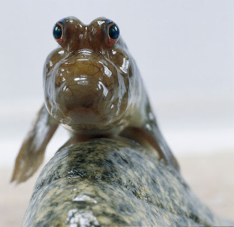

- Nombre completo: Fabricio Luciano Raimondo
- Edad: 20
- Altura: 178cm
- Cumpleaños: 19/09/2003
- Hobbies: Videojuegos, anime, manga
- Lenguaje de programación favorito: CSS
- Idiomas: Español, Inglés, Portugués básico
- Comida favorita: Nuggets
- Playa o montaña: Montaña
- Número favorito: 2
- Dulce o salado: Dulce
- Género musical favorito: J-Rock
- Color favorito: Bordó
- Animal favorito: Peces del fango